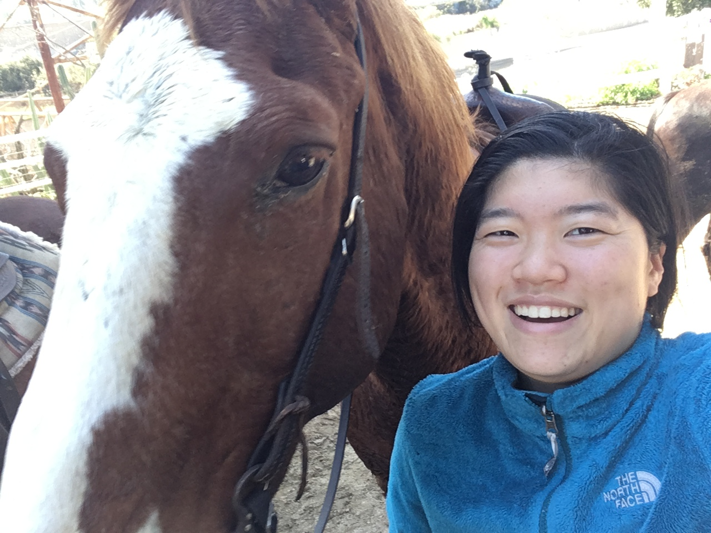

Anthony Bodlović
Queer
36, 6’2”, Single
Virgo
I like making lists, staying up late talking, sleeping in, ghost stories, being in water, and having adventures. I’m looking to make a genuine connection with anyone who is interested - men, women, queer, straight - whether this connection last a lifetime or just for a moment.

Soyoung Shin
Mostly Straight
28, 5’4”, Very Single
Cancer
I love making clothing, spending time in the outdoors, and eating delicious food. I’ve been known to spend an entire day cooking a single meal. I have a big heart, and want it to be open once again, but only for that special someone. Specifically though, I’m dreaming of someone who has a sense of humor, likes giving massages, and can lift 150 pounds. I really let my freak flag fly, so if you’re down for adventure, call me!